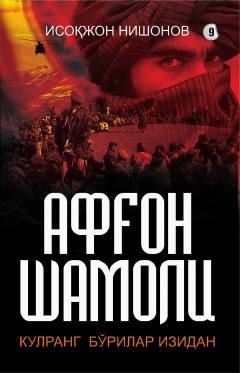

ASVatanga sadoqat va ekstremistik guruhlarga qarshi kurash haqidagi hayajonli roman.
Ushbu asarda turkiyalik ekstremistlar tomonidan tashkil etilgan 'Kulgurang bo'rilar' to'dasi va ularning noqonuniy faoliyati fosh etiladi. Asar bosh qahramoni Bo'ronning jasorati, asirlarni qutqarishi va G'afurning o'z xatolarini anglab yetib, Vatanga qaytish yo'lidagi kurashlari tasvirlanadi.